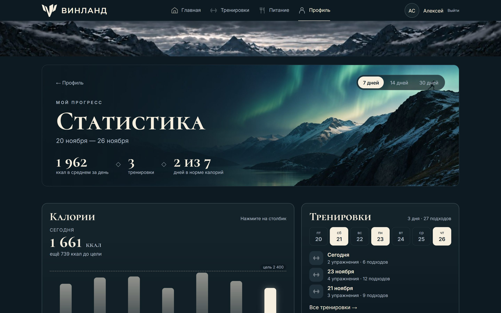
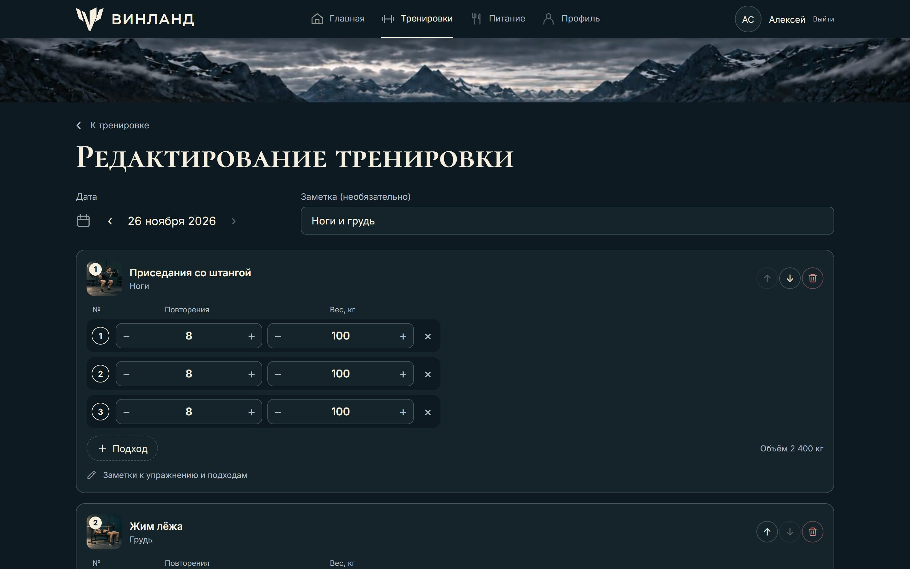
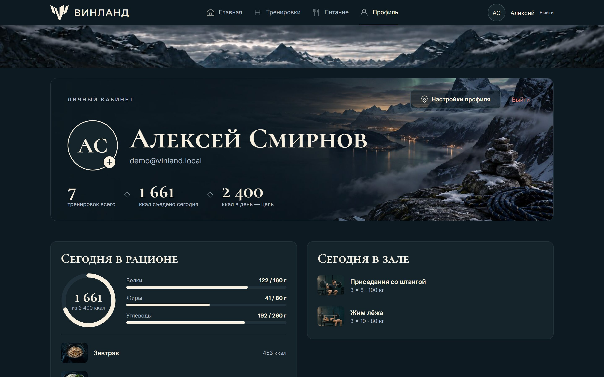
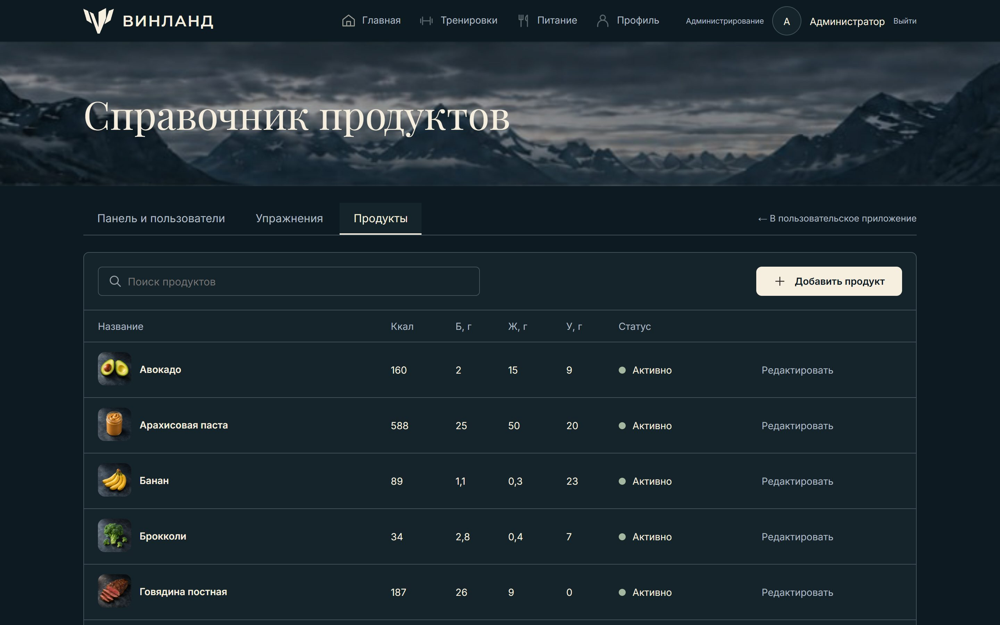
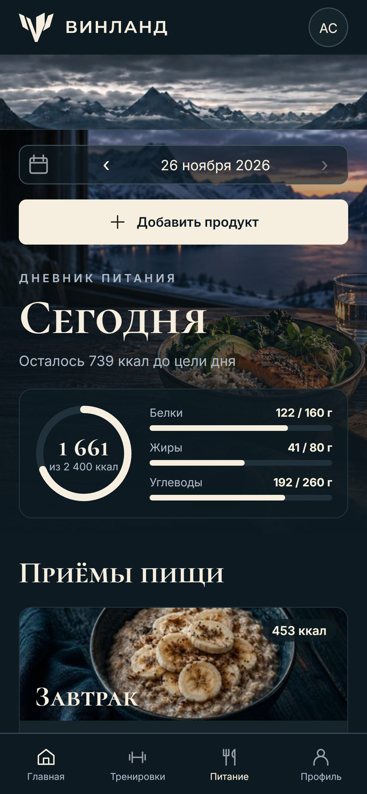
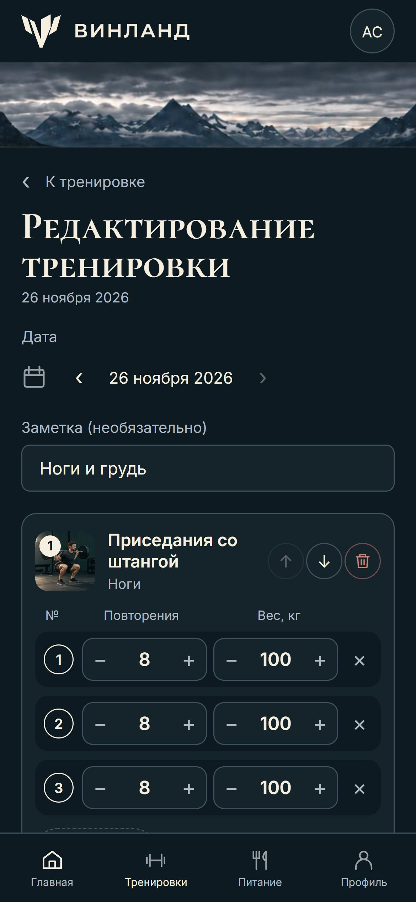
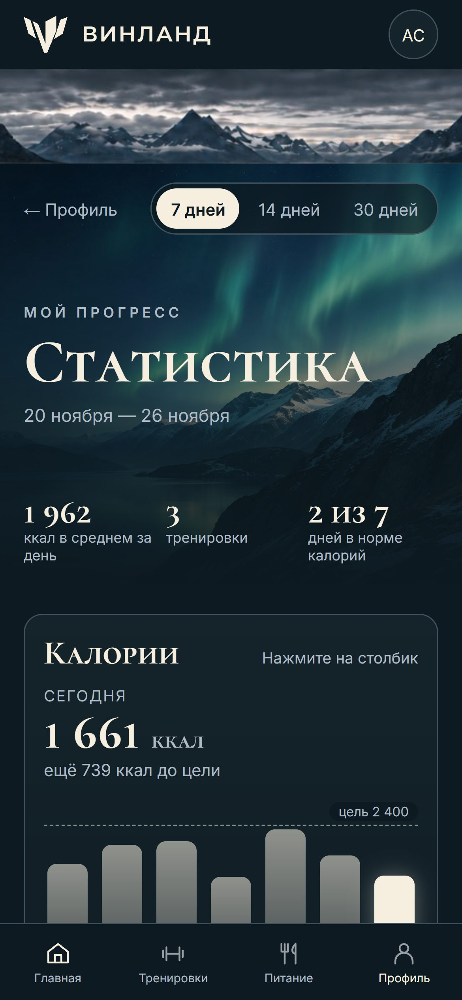

Задача
Сделать веб-приложение для тех, кто занимается силовыми тренировками и считает калории: записать тренировку с подходами и весом, вести дневник питания по граммовкам и видеть, как ты идёшь к своим целям.
Курсовая работа, поэтому нужен полный цикл: техническое задание, схема базы, собственный дизайн и работающий код, а не только макет.
Требования
- Тренировки: упражнения из справочника, подходы, повторения, вес.
- Питание: приёмы пищи, продукты с КБЖУ на 100 г, расчёт по граммам.
- Личные цели и статистика за период.
- Админка для справочников упражнений и продуктов.
- Удобно и на компьютере, и на телефоне.
Решение
Свой дизайн
Лендинг, страницы для компьютера, мобильные экраны, админка и UI-kit сделаны в Figma. Каждый экран свёрстан по трём макетам: 1280, 834 и 390 px.
Быстрый ввод
Подходы правятся кнопками «−/+», КБЖУ считается сам по граммам, история питания открывается на последнем дне с записями.
Честная история
В дневнике хранится снимок продукта на момент записи. Если админ поменяет калорийность или отключит продукт, прошлые дни не изменятся.
Экраны





На телефоне
Отдельная мобильная вёрстка с нижней навигацией, а не уменьшенная версия десктопа.



Как сделано
React 19, React Router, Vite. Без UI-библиотек: вся вёрстка своя, по макетам.
PHP 8.4 без фреймворка, PDO. Один сервер отдаёт и API, и собранный интерфейс.
MySQL 8: внешние ключи, CHECK-ограничения и транзакции держат данные целостными.
Безопасность
- Пароли в bcrypt, сессия в HttpOnly-cookie с SameSite.
- Только подготовленные SQL-запросы.
- Роль админа нельзя получить из браузера.
- Каждый запрос проверяет, чья это запись.
- Лимит попыток входа.
Процесс
- Техническое задание и схема базы.
- Референсы и макеты в Figma, UI-kit.
- Вёрстка экранов под три ширины.
- API, миграции, демо-данные.
- Инструкция для бесплатного демо на Render + Aiven.
Результат
оценка за курсовую
макета на каждый экран
таблиц в базе
UI-библиотек
Рабочее приложение: регистрация, тренировки, дневник питания, цели, статистика и админка. Код открыт на GitHub.
Разработал полностью сам: идея, фронтенд, бэкенд, база, деплой. Работаю с ИИ-инструментами (Claude Code), это ускоряет разработку.